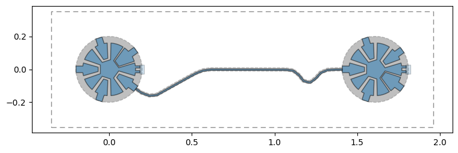
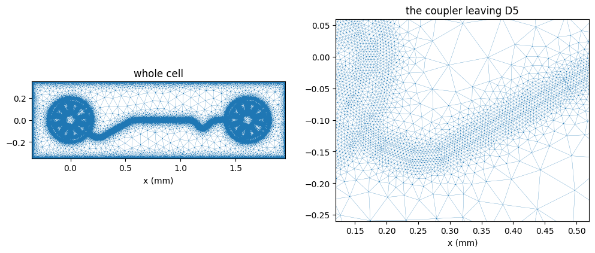

Note
This page was generated from circuit-examples/F.Small-quantum-chips/54-Wallraff_TwoQubit_Cell_Mesh.ipynb.
Two-Qubit Cell: Meshing Part of the 17-Qubit Chip¶


💡 What you need. Meshing needs gmsh:
pip install "quantum-metal[mesh]". The capacitance step at the end also needs ElmerFEM (ElmerSolveron yourPATH); without it the notebook stops after the mesh and says so. The outputs shown here come from a run with gmsh 4.15 and ElmerFEM 26.2.
🧭 Other simulation pathways. This notebook uses ElmerFEM for the capacitance matrix. The same design can also go to Ansys HFSS / Q3D (tutorials 4.01–4.23) or to the pip-installable gmsh + scikit-fem solver for eigenmodes, couplings and capacitance (tutorials 4.43–4.45); AWS Palace is available through SQDMetal, with a native integration in progress. Simulation pathways summarizes what each solver computes, how to install it, and which tutorials use it.
A full chip is far too big to simulate in one piece, and it does not need to be: the quantities that set a qubit’s frequency and its coupling to a neighbor are local. This notebook takes one cell of the 17-qubit surface-code chip — data qubit D5, auxiliary qubit Z3, and the coupler between them — builds it as a small design of its own, and meshes it for the open-source finite-element path: gmsh for the mesh, ElmerFEM for the capacitance matrix.
What you’ll learn
how to cut a cell out of a larger design as its own, cropped design (rather than filtering the big one, which keeps the full-chip ground plane);
how to render and mesh it with
QGmshRenderer, and look at the mesh without a GUI;how to hand the same design to
QElmerRendererfor the capacitance matrix.
The cell uses exactly the geometry of the full chip: build_cell() runs the same builder stages on a subset of the qubits.
[1]:
# In Colab / Binder, uncomment to install Quantum Metal with the mesher.
# !pip install -q "quantum-metal[mesh]"
[2]:
import shutil
import sys
import tempfile
import time
import urllib.request
import warnings
from pathlib import Path
import matplotlib.pyplot as plt
import numpy as np
from IPython.display import display
import qiskit_metal as qm
from qiskit_metal.validation import DEFAULT_RULES, SHAPE_RULES, validate
warnings.filterwarnings("ignore", category=FutureWarning)
# The builder and measured geometry are shared with the 17-qubit notebook.
RES = Path("resources/wallraff_17q")
if not RES.exists():
RES.mkdir(parents=True)
base = (
"https://raw.githubusercontent.com/qiskit-community/qiskit-metal/main/"
"docs/circuit-examples/F.Small-quantum-chips/"
"resources/wallraff_17q/"
)
for f in ("wallraff_17q.py", "geometry.json"):
urllib.request.urlretrieve(base + f, RES / f)
sys.path.insert(0, str(RES))
import wallraff_17q as chip
try:
import gmsh
from qiskit_metal.renderers.renderer_gmsh.gmsh_renderer import QGmshRenderer
HAVE_GMSH = True
except Exception as error: # not installed, or a system library is missing
HAVE_GMSH = False
print("gmsh unavailable:", error)
1. Build the cell¶
build_cell() makes a MultiPlanar design — the layer stack the gmsh and Elmer renderers read — with its chip cropped to the two qubits plus a 0.35 mm margin, and places the qubits and their coupler exactly as on the full chip.
[3]:
design = chip.build_cell(("D5", "Z3"))
size = design.chips.main.size
print(f"cell: {size.size_x} x {size.size_y}, components: {list(design.components)}")
fig = qm.view(design)
fig.set_size_inches(9, 3.2)
display(fig)
print(validate(design, rules=[*DEFAULT_RULES, *SHAPE_RULES]).report())
cell: 2.3092mm x 0.7mm, components: ['D5', 'Z3', 'CPL_D5_Z3']

Design rules passed (12 rules ran, no findings).
2. Mesh it with gmsh¶
The junctions are skipped: in an electrostatic (capacitance) simulation a Josephson junction is a lumped inductor, added afterwards in the circuit model. The mesh is fine near the metal edges and coarse far away (min_size/max_size).
[4]:
if HAVE_GMSH:
mesher = QGmshRenderer(design)
if not gmsh.isInitialized():
gmsh.initialize()
gmsh.option.setNumber("General.Terminal", 0) # keep gmsh's progress log out
mesher.options.mesh.min_size = "5um"
mesher.options.mesh.max_size = "80um"
start = time.time()
mesher.render_design(skip_junctions=True)
tags, coords, _ = gmsh.model.mesh.getNodes()
_, triangles = gmsh.model.mesh.getElementsByType(2)
_, tetrahedra = gmsh.model.mesh.getElementsByType(4)
print(
f"meshed in {time.time() - start:.0f} s: {len(tags):,} nodes, "
f"{len(triangles) // 3:,} triangles, {len(tetrahedra) // 4:,} tetrahedra"
)
meshed in 37 s: 109,821 nodes, 140,275 triangles, 609,462 tetrahedra
Look at the mesh¶
gmsh has its own viewer (mesher.launch_gui()), but it needs a display. The cell below draws the triangles that lie in the plane of the metal instead: they crowd along every metal edge, where the field changes fastest.
[5]:
if HAVE_GMSH:
xyz = coords.reshape(-1, 3)
index = {tag: i for i, tag in enumerate(tags)}
tri = np.vectorize(index.get)(triangles.reshape(-1, 3))
in_plane = np.ptp(xyz[tri, 2], axis=1) < 1e-9
plane = tri[in_plane & np.isclose(xyz[tri[:, 0], 2], 0.0)]
fig, axes = plt.subplots(1, 2, figsize=(12, 4.5))
for ax, (x0, x1, y0, y1), title in (
(axes[0], (-0.35, 1.95, -0.35, 0.35), "whole cell"),
(axes[1], (0.12, 0.52, -0.26, 0.06), "the coupler leaving D5"),
):
ax.triplot(xyz[:, 0], xyz[:, 1], plane, lw=0.2, color="tab:blue")
ax.set_xlim(x0, x1)
ax.set_ylim(y0, y1)
ax.set_aspect("equal")
ax.set_title(title)
ax.set_xlabel("x (mm)")
plt.show()

[6]:
if HAVE_GMSH:
mesh_file = Path(tempfile.gettempdir()) / "wallraff_D5_Z3.msh"
mesher.export_mesh(str(mesh_file))
print(f"{mesh_file.name}: {mesh_file.stat().st_size / 1e6:.1f} MB")
mesher.close()
wallraff_D5_Z3.msh: 30.1 MB
3. Capacitance matrix with ElmerFEM (optional)¶
QElmerRenderer meshes the same design through gmsh and solves the electrostatics in Elmer. Every separate piece of metal — each qubit island, each pad, the coupler — becomes a row of the capacitance matrix. That matrix is the input to the lumped-oscillator model (LOM) that gives each qubit’s charging energy and the coupling between D5 and Z3; tutorial 4.19 walks through that step.
[7]:
if not HAVE_GMSH or shutil.which("ElmerSolver") is None:
print(
"ElmerSolver not found: install ElmerFEM (https://www.elmerfem.org/) "
"to compute the capacitance matrix of this cell."
)
else:
from qiskit_metal.renderers.renderer_elmer.elmer_renderer import QElmerRenderer
elmer = QElmerRenderer(design)
if not gmsh.isInitialized():
gmsh.initialize()
gmsh.option.setNumber("General.Terminal", 0)
# Elmer's input, mesh and results go to a scratch folder.
elmer.options.simulation_dir = tempfile.mkdtemp(prefix="wallraff_cell_")
elmer.gmsh.options.mesh.min_size = "5um"
elmer.gmsh.options.mesh.max_size = "80um"
start = time.time()
elmer.render_design(skip_junctions=True)
elmer.add_solution_setup("capacitance")
elmer.run("capacitance")
print(f"solved in {time.time() - start:.0f} s; capacitance matrix in fF:")
cmat = elmer.capacitance_matrix
display(cmat.round(2))
elmer.close()
11:56PM 33s INFO [run]: Mesh not exported yet; exporting it now.
11:56PM 33s INFO [run]: Running ElmerGrid on input mesh from Gmsh...
11:56PM 35s INFO [run]: Running ElmerSolver for solver type: 'capacitance'
solved in 52 s; capacitance matrix in fF:
| Z3_contact_cpl3 | D5_circle_inner | Z3_circle_inner | ground_plane | |
|---|---|---|---|---|
| Z3_contact_cpl3 | 418.39 | -18.39 | -18.40 | -381.59 |
| D5_circle_inner | -18.39 | 167.02 | -0.06 | -148.56 |
| Z3_circle_inner | -18.40 | -0.06 | 168.07 | -149.61 |
| ground_plane | -381.59 | -148.56 | -149.61 | 300.00 |
Reading the matrix¶
Each row is one piece of metal that is not connected to another: the two qubit islands, the coupler, and ground. The coupler and the two pads it joins form one conductor; the renderer names it after one of its pieces (Z3_contact_cpl3). The pads that have no line attached reach the pocket edge in this model, so they are part of ground. Ground is the reference conductor, and the renderer fills its diagonal entry with a placeholder (300 fF); every other entry is computed.
The diagonal entry of an island is its total capacitance \(C_\Sigma\), which sets the charging energy \(E_C = e^2/2C_\Sigma\); the off-diagonal entry between an island and the coupler is what couples the two qubits through it. These numbers describe this cut-out cell: on the full chip the other pads connect to readout resonators and to other couplers rather than to ground, and the junction adds its own capacitance, so they are not a prediction of the measured device.
[8]:
if "cmat" in globals():
from scipy.constants import e, h
coupler = next(n for n in cmat.index if "cpl" in n) # the coupler's net
for q in ("D5", "Z3"):
island = f"{q}_circle_inner"
c_sigma = cmat.loc[island, island]
e_c = e**2 / (2 * h * c_sigma * 1e-15) / 1e6
print(
f"{q}: C_sigma = {c_sigma:5.1f} fF E_C/h = {e_c:4.0f} MHz "
f"C to coupler = {-cmat.loc[island, coupler]:4.1f} fF"
)
D5: C_sigma = 167.0 fF E_C/h = 116 MHz C to coupler = 18.4 fF
Z3: C_sigma = 168.1 fF E_C/h = 115 MHz C to coupler = 18.4 fF
Where to go next¶
LOM analysis: turn the capacitance matrix into qubit frequencies and the D5–Z3 coupling — tutorial 4.19 Analyze a transmon using ElmerFEM, section 4.
A different pair:
chip.build_cell(("X3", "D8"))builds any two neighbors, or more: pass a longer tuple.Mesh density: halve
min_sizeand see how the matrix moves — a quick convergence check.
References¶
Krinner, N. Lacroix, A. Remm et al., “Realizing repeated quantum error correction in a distance-three surface code,” Nature 605, 669–674 (2022). doi:10.1038/s41586-022-04566-8
Geuzaine, J.-F. Remacle, “Gmsh: A 3-D finite element mesh generator with built-in pre- and post-processing facilities,” Int. J. Numer. Methods Eng. 79, 1309–1331 (2009). doi:10.1002/nme.2579
ElmerFEM, open-source multiphysics finite-element software, CSC – IT Center for Science: elmerfem.org
For more information, review the Introduction to Quantum Computing and Quantum Hardware lectures below
|
Lecture Video | Lecture Notes | Lab |
|
Lecture Video | Lecture Notes | Lab |
|
Lecture Video | Lecture Notes | Lab |
|
Lecture Video | Lecture Notes | Lab |
|
Lecture Video | Lecture Notes | Lab |
|
Lecture Video | Lecture Notes | Lab |